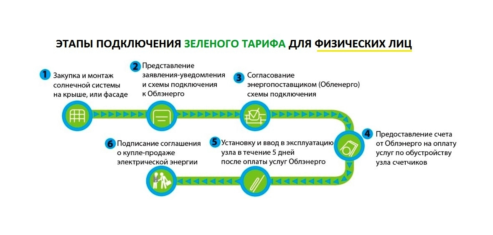

Зелений тариф
“Зелений тариф“ – це спеціальні умови створені державою за підтримки європейських партнерів, які спрямовані на розвиток відновлюваних джерел енергії, таких як сонце, вітер та біогаз. Тарифна ставка «Зеленого» тарифу завжди прив’язана до ЄВРО і в даному році становить – 0,16 ЄВРО за КОЖЕН проданий кіловатт у загальну мережу. Термін дії «Зеленого» тарифу – до 1 січня 2030 року.
ЕТАП № 1
Збільшення вхідної потужності об’єкту споживання
Замовник звертається з наміром отримати необхідну потужність у Оператора Системи Розподілу АТ «Полтаваобленерго» із заявою встановленого зразка. Заява про приєднання разом з копіями доданих до неї документів подається Замовником особисто або надсилається поштовим рекомендованим відправленням, або може бути подана в електронному вигляді через офіційний сайт АТ «Полтаваобленерго» в мережі Інтернет із застосуванням електронного цифрового підпису в установленому законодавством порядку.
До заяви встановленого зразка додаються ксерокопії наступних документів:
- Копія документа, що підтверджує право власності чи користування цим об’єктом, або копія витягу з Державного реєстру речових прав на нерухоме майно, або, за відсутності об’єкта, копія документа, що підтверджує право власності чи користування земельною ділянкою, або копія витягу з Державного реєстру речових прав на нерухоме майно. У разі відсутності кадастрового номера у свідоцтві про право власності на земельну ділянку – викопіювання з топографо-геодезичного плану або плану забудови території із зазначенням місця розташування земельної ділянки;
- Копія ситуаційного плану та копія викопіювання з топографо-геодезичного плану в масштабі 1:2000 (1:1000, 1:500 або 1:200) із зазначенням місця розташування об’єкта (об’єктів) Замовника, земельної ділянки Замовника або прогнозної точки приєднання (для об’єктів, які приєднуються до електричних мереж уперше);
- Копія паспорта або належним чином оформлена довіреність чи інший документ на право укладати та підписувати договір про приєднання, а також подавати та отримувати документи;
- Копія будівельного паспорта або містобудівних умов і обмежень з графічною частиною із зазначенням місця розташування, потужності і категорії надійності електропостачання по кожному об’єкту замовника (для об’єктів, які приєднуються до електричних мереж вперше);
- Для існуючих об’єктів потрібно надати чинний договір користування електроенергії;
Орієнтовна вартість ЕТАПУ №1:
Ксерокопія наявних документів– 20 грн.
Викопіювання із ситуаційного плану М1:2000 – безкоштовно / 1600 грн / 2500 грн
Адресна доставка комплекту документів на головний офіс ОСР – 20 / 55 грн / 200 грн
Довіренність представляти інтереси Замовника у структурних підрозділах ОСР – 400 грн.
ЕТАП № 2
Отримання Технічних умов, Договіру приєднання та термінів виконання робіт із підвищення вхідної потужності об’єкту
Через 3-4 тиждня після подачі заяви, яка зазначена в ЕТАПІ №1 на руки отримуємо Технічні умови та Договір приєднання. Додатково із вищезазначеними документами ми отримуємо “розрахунок оплати за приєднувану потужність”. Даний документ є одним із найголовніших документів, тому що в ньому вказано розрахунок вартості за приєднання і терміни виконання цих робіт, які стартують тільки після повної передоплати з боку Замовника.
Перш ніж підписувати дані документи, необхідно провести аналіз термінів, адже через великі навантаження і відсутності своєчасної модернізації енергетичного сектора, терміни виконання можуть досягати більше 700 днів. Це пов’язано з граничною завантаженістю трансформаторної підстанції, до якої ви підключені і для надання запитуваної вами потужності, необхідно провести роботи з проектування та встановлення додаткової розвантажувальної підстанції.
Якщо терміни та сумма за виконання робіт, які зазначені у вищевказаних документах Вас повністю задовольняє, тоді перходимо до наступного етапу.
ЕТАП № 3
Оплата рахунку згідно договору приєднання.
Після підписання документів, зазначені в Етапі № 2 і подальшої передачі їх в головний офіс ОСР, через тиждень на електронну адресу, яка вказана в заяві, ми отримуємо рахунок на оплату.
Робимо оплату згідно виставленого рахунку та скан квитанції (або її фотографія) відправляємо на електронну адресу, з якого був отриманий рахунок.
Дана процедура необхідна для оперативного надання Вам послуг із приєднання потужності.
ЕТАП № 4
Проведення підготовчих робіт згідно ТУ
Згідно ТУ Замовнику необхідно:
- виготовити проект “Внутрішнього електрозабезпечення електроустановок Замовника” – до 7 діб;
- погодити його у технічному відділі ОСР – 15 діб;
- виконати роботи згідно проекту (монтаж контуру заземлення, монтаж розподільчого боксу, монтаж проводки) – до 7 діб;
Після проведення підготовчих робіт з боку Замовника, ОСР виконує свою частину робіт пов’язаних з проектуванням, виконанням монтажних та пусконалагоджувальних робіт, організовує облаштування вузла обліку і видає довідку про виконання технічних умов.
Орієнтовна вартість даного етапу:
Виготовлення проекту – від 1500 грн.
Роботи згідно проекту від 5000 до 15000 грн. в залежності від складності робіт.
ЕТАП № 5
Предоставление пакета документов для оформления паспорта точки распеределения объекта подключения
После выполнения вышеуказанных этапов Заказчик должен предоставить необходимый перечень документов для оформления договора о предоставлении услуг и распределения электроэнергии:
- Ксерокопия паспорта (1,2,3,4 страницы, страница с регистрацией, в случае биометрического паспорта – справку о месте регистрации);
- Идентификационный код или справка о его отсутствии;
-
Ксерокопия права собственности:
- на дом («Витяг Державного реєстру речових прав на нерухоме майно»);
- на земельный участок («Витяг Державного реєстру речових прав на нерухоме майно» и документом, который подтверждает начало строительство);
- Ксерокопия Договора о стандартном присоединении к электрическим сетям системы распределения;
- Ксерокопия технических условий стандартного присоединения;
- Ксерокопия справки о выполнении технических условий;
- Ксерокопия проекта на внутреннее электрооснащение;
- Ксерокопия документов, которые подтверждают готовность о эксплуатации электроустановок объекта потребителя (паспорт заземляющего устройства, протокол сопротивления изоляции кабелей, протокол сопротивления заземления, акт технического готовности электромонтажных работ).